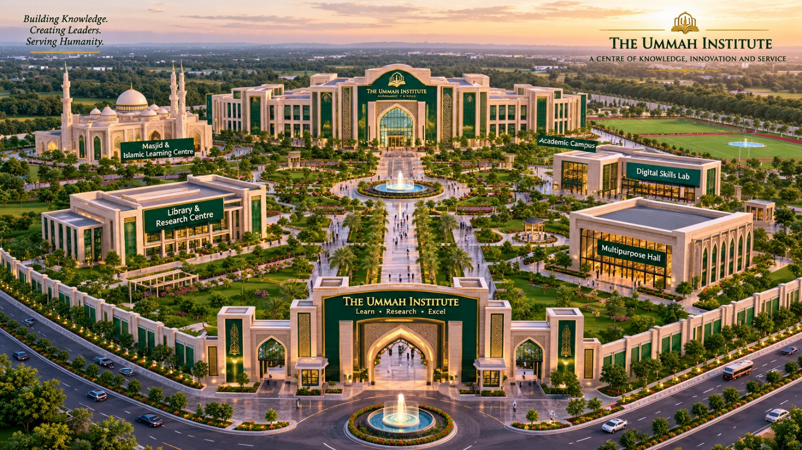
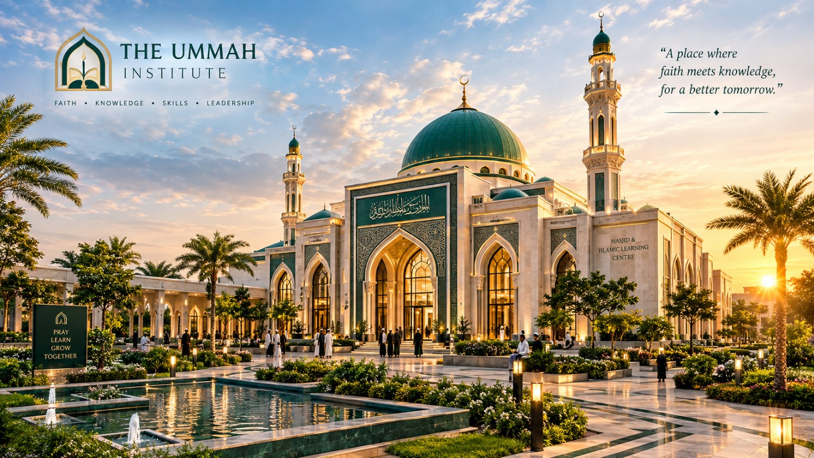
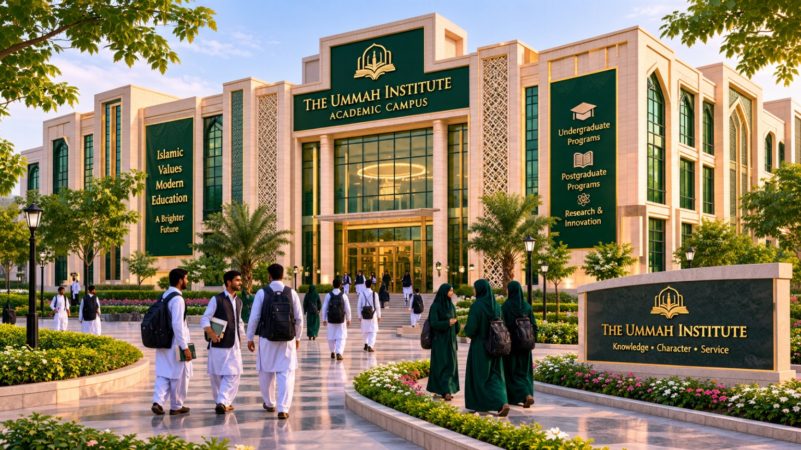
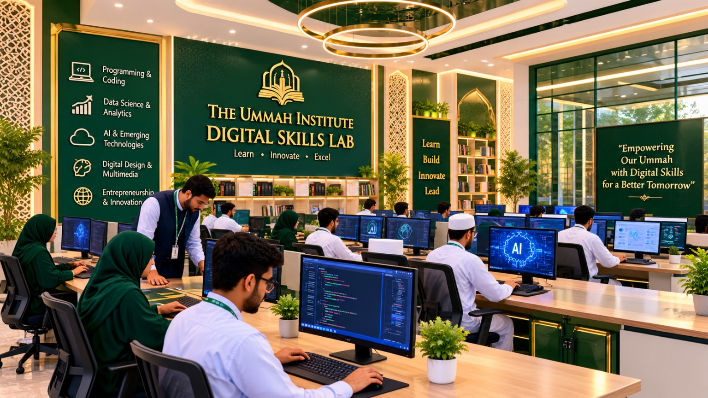
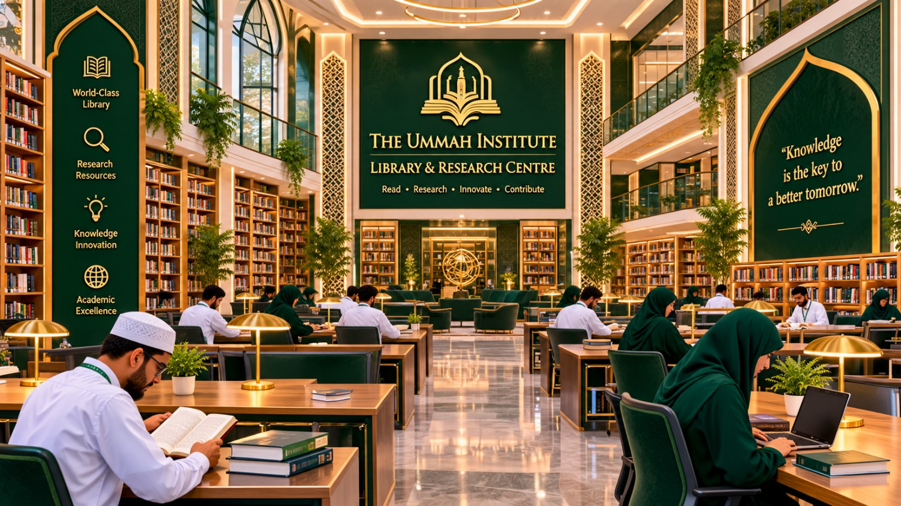
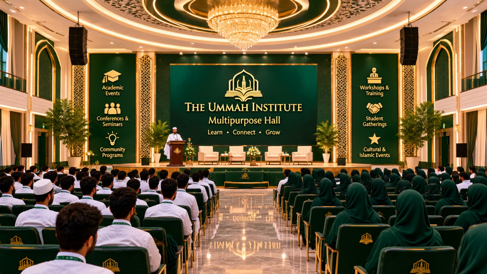

01
Faith & Values
Strong foundations in Islamic knowledge, ethics and character.
A future-focused educational vision bringing together Islamic knowledge, modern academics, digital skills and principled leadership.

We envision a generation that carries deep faith, thinks critically, builds confidently and serves humanity with purpose.
The Ummah Institute is a proposed educational initiative built around a simple belief: Islamic learning and contemporary education should strengthen one another. By connecting knowledge with practical skills, character and leadership, we aim to help young people prepare for a changing world while staying grounded in their values.
Explore our learning model →Strong foundations in Islamic knowledge, ethics and character.
Academic learning that encourages curiosity and critical thinking.
Technology and practical skills for opportunities in a digital world.
Confidence, responsibility, enterprise and service to society.
Flexible learning pathways designed for different ages, ambitions and stages of life.
Build a meaningful foundation in faith, understanding, values and everyday practice.
Support academic growth, curiosity, communication and independent thinking.
Explore practical digital capabilities, creative technology and future-ready skills.
Encourage initiative, problem-solving and responsible enterprise.
Focused short courses, workshops and seminars for professionals and skill-seekers.
Develop collaboration, communication, service and a sense of shared responsibility.
Take a visual tour of the proposed spaces bringing learning, worship, creativity and community together.

A welcoming space for worship, reflection and Islamic learning.

Learning spaces designed to support curiosity and growth.

Hands-on learning in technology, coding and creative digital skills.

A calm environment for reading, research and independent study.

A flexible venue for seminars, events, workshops and gatherings.
One connected environment for learning, service and community.
These images are illustrative architectural concepts, not photographs of completed facilities. Final scope, layout, capacity and phasing will depend on land, planning approvals, feasibility and funding.
We aim to progress step by step, with clear priorities, responsible planning and transparent communication.
Initial development target. Land cost and final allocations require separate confirmation.
Refine the proposal, feasibility, budget and governance model.
Aim to acquire approximately 2 bighas of land, subject to availability and due diligence.
Prioritise essential learning facilities as resources and approvals allow.
Develop additional facilities in planned, sustainable stages.
We welcome conversations with potential partners, education advocates and supporters who would like to explore this vision and help shape its next steps.
Start a conversation ↗Partnerships and contributions are subject to further discussion, due diligence and formal arrangements.